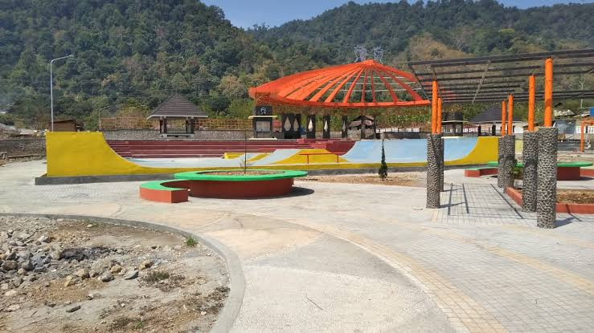
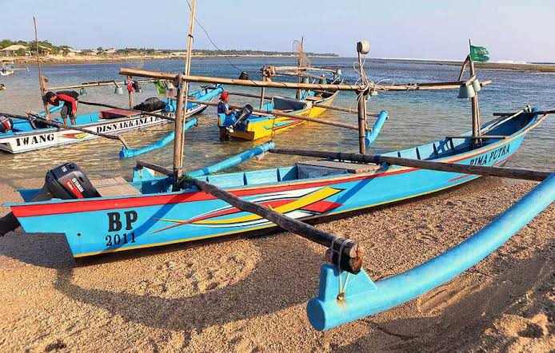
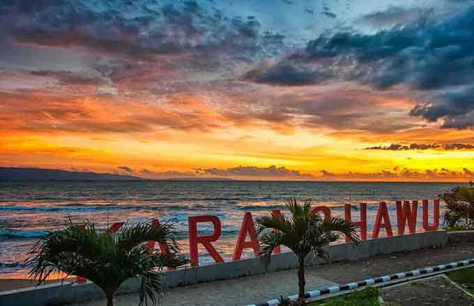

Sejarah

adalah sebuah kota sekaligus kecamatan di Kabupaten Sukabumi, Provinsi Jawa Barat, Indonesia.
Letaknya berada di pesisir Samudra Hindia, yakni di bagian barat daya wilayah kabupaten.
Palabuhanratu merupakan ibu kota Kabupaten Sukabumi. Di masa Hindia Belanda, daerah ini dikenal
dengan nama Wijnkoops-baai.
Daerah ini merupakan tempat wafatnya Ulama Besar, Syaikh Abdusshobur (Mama Gunung Sumping) guru bagi
para ulama Palabuhanratu dan sekitarnya, lahir di Kampung Cisaar Cikidang, Wafat di Pesantren Gunung
Sumping Palabuhanratu.
Palabuhanratu juga merupakan ibu kota Kabupaten Sukabumi. Di masa Hindia Belanda, daerah ini dikenal
dengan nama Wijnkoops-baai.
Hari Nelayan

Hajat Laut, yakni upacara yang dilakukan nelayan di Kota Palabuhanratu sebagai perwujudan rasa terima
kasih mereka terhadap kemurahan Tuhan Yang Maha Esa dengan cara melarung sesajen ke laut lepas.
Acara ini biasa dilaksanakan pada tiap-tiap bulan April biasanya masyarakat sekitar Palabuhanratu
mengadakan ritual upacara adat Hari Nelayan. Hari Nelayan dimaksudkan sebagai syukuran kepada Tuhan
YME atas rezeki yang telah mereka dapatkan dari hasil laut dan agar dijauhkan dari bencana. Biasanya
dalam upacara ini disediakan sesaji berupa kepala kerbau yang nantinya akan dilarung ke tengah laut.
Wisata
Pantai Palabuhanratu atau lebih populer sebagai Pantai Pelabuhan Ratu, adalah sebuah tempat wisata di
pesisir Samudra Hindia di selatan Jawa Barat. Lokasinya terletak sekitar 60 km ke arah selatan dari
Kota Sukabumi. Pantai ini dikenal memiliki ombak yang sangat kuat dan karena itu berbahaya bagi
perenang pantai. Topografinya berupa perpaduan antara pantai yang curam dan landai, tebing karang
terjal, hempasan ombak, dan hutan cagar alam.
Pantai Karanghawu

Pantai Karanghawu, yang letaknya sekitar 20 km dari pusat Kota Palabuhanratu, merupakan pantai
karang yang menjorok ke laut dan berlubang di beberapa bagian itu. Bentuk karangnya lebih mirip
tungku, dalam bahasa Sunda disebut “Hawu”
Geopark Ciletuh

Kawasan Geopark CIletuh Palabuhan Ratu memiliki luas 126.100 ha. Tidak heran jika di kawasan ini
terdapat banyak curug atau air terjun yang bisa dikunjungi. Setidaknya terdapat 8 curug yang
bisa dikunjungi.Curug Luhur (curug Cigangsa) berada di ketinggian tebing lebih dari 100 m.
keistimewaannya, pengunjung bisa melihat pemandangan pelangi yang muncul di bawah curug.
Curug Puncakjeruk Ada di aliran Sungai Ciletuh, Mekarjaya. Air terjun ini sangat lebar dan
memiliki 2 tingkat, atas dan bawah.
Curug Cikaret berada di aliran Sungai Cikaret, Mekarjaya. Termasuk salah satu curug yang
tersembunyi.
Curug Puncakmanik Curug ini berada di aliran sungai Ciletuh yang membatasi desa Tamanjaya dan
C|ibenda. Curug ini letakknya hanya 600 meter dari curug tengah.
Curug Tengah berjarak kurang lebih 200 m dari Curug Awang da nada di aliran sungai CIletuh.
Pengunjung bisa berenang di danau kecil di Curug Tengah.
Curug Awang berada di aliran sungai CIletuh, Tamanjaya. Air terjun ini memiliki lebar 60 meter
dan ketinggian sekitar 40 meter. Ciri khas curug ini adalah dinding batu alam berwarna coklat
kemerahan.
Curug Cikanteh Berada di Desa Ciwaru. Perlu menyusuri bebatuan dan menyeberangi sungai agar
dapat sampai ke Curug Cikanteh.
Curug Sodong berada di desa Ciwaru dan air terjun yang paling mudah dijangkau. Disebuut juga
dengan curug Penganten atau Curug Kembar.
Curug Cimarinjung berada di Desa Ciemas dan dekat dengan tepi pantai Palangpang. Air terjunnya
bisa langsung terlihat dari pintu masuk kawasan Geopark Ciletuh.